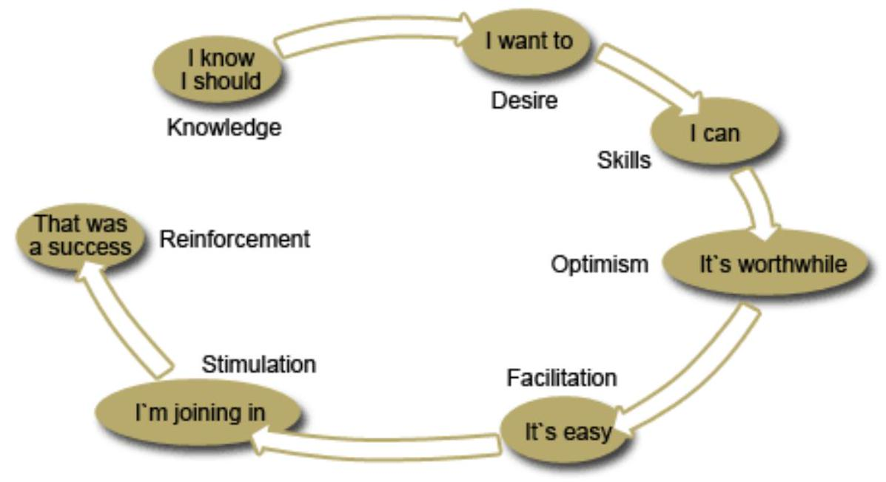
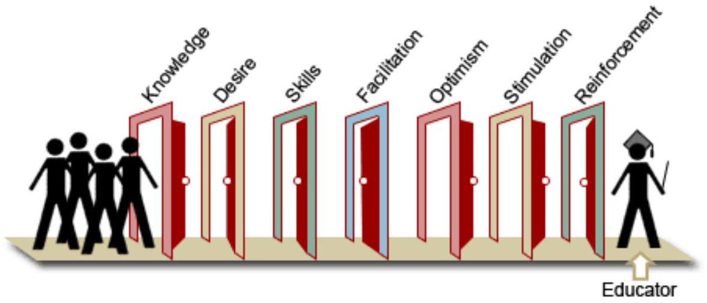

Cultural Beliefs, Social Change & Effects on Health
SECTION 7: CULTURAL BELIEFS, PRACTICES AND EFFECTS ON HEALTH
Introduction
In this section, you will use your knowledge on culture and experiences of the effects of cultural beliefs and practices on health. Everyone comes from a family with a cultural background. As you learnt in section one, culture derives from all that members of a society teach one another. It is dynamic because it keeps changing and it is passed on from parents to children. Therefore, the way in which each society relates with its surroundings and its culture may affect the community's health. For example, in communities where foodstuffs like honey and wine are gathered or tapped high up in the trees, many may suffer falls leading to fractures of limbs and spinal cords. Therefore, as you carry out community health service, you should always keep in mind the cultural behaviour of your patients.
Objectives
By the end of this section you will be able to:
Define culture
Identify the components of culture
Describe the elements of culture
List the characteristics of a culture
Define cultural beliefs and practices
Explain selected cultural beliefs and practices that affect health of mankind
What is Culture?
Culture is defined as the totality of socially transmitted behaviour patterns, arts, beliefs, institutions, and all other products of human work and thought. According to Coxa and Maed (1975), culture is defined as a group of learned values or acquired beliefs that a person copies from other persons with whom they interact.
It may also be defined as all that members of a societal group teach one another. Kroeber and Kluckhorn (1952) identified 164 definitions of culture. In summary culture can be defined as socially transmitted behaviour patterns, arts, institutions, as well as the values and beliefs that a person copies from other persons with whom they interact.
Culture is also knowledge, some of it conscious and made into coded or traditional forms, such as myths and rules, some of it quite unconscious and automatic, such as the rules and structures that allow language speakers to understand each other. This knowledge is learned both formally and unconsciously within human groups and is heavily dependent upon language as a medium for transmission. Culture is shared between generations and within generations, but this sharing is neither completely uniform, nor without error. There are esoteric (or specialist) compartments of culture in all societies, and various factors affect the accuracy with which culture is reproduced as it passes between individuals.
Humans, as individuals and as members of groups, use cultural assumptions to make sense of the world around them as they live out their lives. They also use culture to create strategies with respect to their group and individual interactions.
Components of Culture
The two components of culture are:
Non-material culture - these are things that are observed through the behaviour of societal members.
Material culture - these are the physical things in society.
You will now cover the various forms of each of these two components of culture.
Non-material Culture
There are four various forms of non-material culture, they are listed below.
Language
Language refers to the pattern of spoken or written words used by a particular society in order to communicate. The mother tongue refers to the language of one's parents. You may notice that each one of us learnt a mother tongue that also reflects on our cultural group. For example, the table below illustrates the relationship between the cultural group and the language used.
Cultural group
Language
Maasai
Masai
Agikuyu
Kikuyu
Luo
Dholuo
Giriama
Giriama
Mores
Mores are explained as social norms, which emphasise the expected moral behaviour for societal members. If an individual breaks the mores, the individual receives severe punishments. Some examples of mores are: do not lie, do not steal or destroy other's property and so on. All society members are expected to obey the mores or else they receive punishment. Therefore, it can be said that mores refer to all things that each one of us would like others to do to us. Where mores are written down, they are referred to as laws.
Norms
Norms are defined as socially accepted patterns of behaviour. You should note that norms differ from society to society. They may include children respecting parents and older people in society, as demonstrated by a young person offering an older person a seat in a bus and so on. Another example is that both the young and the old are expected to dress properly according to the occasion. All are expected to observe certain table manners while eating. In some communities, children should be served first, followed by the men and lastly the women. All these norms aim to maintain order. Norms can be further subdivided into two categories, that is, mores and laws.
Laws
Laws are written, socially confirmed rules and regulations of conduct, which if violated, are punishable. Laws are enforced by a socially identified agency. For an example of medically related laws, refer to module four, unit one, section two on the mental health act.
Material Culture
According to Akinsola (1983) material culture is defined as the part of culture that includes physical things in any society. Examples of material culture include the type of clothing used, ornaments such as necklaces, bangles, and earrings, kitchenware, type of houses and many more. Akinsola also explains that the importance of identifying material culture relates to how these items are used by individuals in the society. For example, among the Agikuyu people, women and girls learnt to use pots for cooking and gourds for serving food and storing liquids such as milk.
In modern days, nurses are expected to learn how to use computers, new types of blood pressure machines, digital thermometers and others in order to improve the health care they provide. In addition, they are expected to provide nursing care to persons of varying cultural ethnic background. For further details refer to the module one, unit one on professionalism.
Elements of Culture
The elements of culture include:
Material life
Language
Social interactions
Religion
Education
Values
The main characteristics of culture are that:
It is learned
It is shared
It is an adaptation
It is a dynamic system changing constantly
Cultural Beliefs
A cultural belief is a personal conviction and disposition to retain and abandon actions taking into account values of one's own culture. Cultural beliefs may pertain to child rearing or housing.
Several studies have noted that, besides inadequate availability of health care services in many areas, especially the less developed countries, certain disease specific and nondisease specific cultural beliefs may influence people's health seeking behaviour. It has even been noted that health services may be underutilised and health and child care instructions may be ineffective or ignored in traditional and transitional societies where people's ideas and behavioural patterns conflict with the knowledge being passed to them (Feyisetan and Adeokun 1992; Feyisetan 1992).
Feyisetan and Adeokun (1992) argue that nonadoption of modern preventive and curative measures cannot be attributed to poverty alone since the costs of some of these measures are not exorbitant in several of these societies. Rather, they suggest that the gap between awareness of modern health measures and health seeking behaviour must be sought in the social and cultural determinants of behaviour in such matters as childcare and disease management, since, for most mothers, perceptions of the aetiology of the childhood diseases are rooted in cultural beliefs.
You will now cover a brief review of disease specific cultural beliefs.
Food Taboos
Outbreaks of malnutrition among children in this country may not only be associated with lack of food but also with culture patterns affecting food. For example, in some parts of Kenya, children and women are not given eggs in the belief that the child will learn to be a thief when grown up or that a mother feeding on eggs may harm her unborn baby. Instead, the eggs are reserved for the men to eat or to be sold at the market. In many homes that keep poultry, these eggs could serve as source of protein for young ones, were it not for these cultural beliefs.
Overcrowding
When several family members live in congested homes with a low standard of hygiene, this may contribute to poor health. This mainly occurs in urban centres, where a family may rent one room, which serves as the kitchen, bedroom and dining room. There may be communal water but often there is none, and in such cases the family has to buy water or fetch it from a stream. Under such living conditions children suffer from diarrhoea, intestinal worms and sometimes malnutrition.
Due to the increased expenses associated with hospital care, parents may decide to take their child to traditional medicine men. Often traditional healers are more easily accessible and services can be paid for later when the parent earns some money and so on. The child will only be brought to hospital much later, if their condition fails to improve.
This is a difficult situation and that is why you covered professionalism module one, unit one and looked at ethical issues in nursing. Adhering to professionalism means you should provide health care to all clients in need, irrespective of their social background and health seeking behaviour.
Having had an overview of the cultural beliefs, you shall now look at some examples of effects of cultural beliefs and how they affect the way of living among people.
An Example of the Effects of Cultural Beliefs on the Diet of the Somalis
'Fat and healthy' is how parents prefer their kids to be, even to be overweight or obese by western standards. Increased interest by Somali parents in the use of high calorie nutrition supplements for their children to boost weight gain has been observed. This practice is leading to feeding mismanagement. Other effects of culture on their diet are:
Camel milk is believed to be the best of all milks.
Eating chicken injected with hormones is believed to be bad for the human heart and to contribute toward being fat.
Breastfeeding women believe that tea increases milk production and therefore they increase their consumption of tea, which is usually very much sweetened with sugar. Women in the educated groups have reported not liking the idea of pumping breast milk, for fear of disfigurement.
Oral Health: Infant Nutrition
Most Somali mothers living in Mogadishu prefer to give birth in a hospital. Somali women who choose to give birth at home use a midwife, who is usually a hospital worker with some western medical training who is paid privately for assisting in the home birth. Whether giving birth in the hospital or at home, a woman relies on the help of midwives and will rarely see a doctor unless birthing complications arise. Somali mothers receive information about how to feed and care for their babies from their mothers and other relatives, and from those who deliver their child.
Infant Nutrition
Breastfeeding
It is culturally important for Somali mothers to breastfeed their babies. Not doing so is seen as a sign of poor mothering. Somali children are breastfed until they are two years old, or until the mother becomes pregnant again. Children raised in Mogadishu are fed breast milk supplemented with goat's milk at six months. Nomadic Somali mothers feed their child cow's milk mixed with water at three months. Few Somali mothers use canned formula milk because it is expensive and is believed to cause stomach problems.
In addition to breast milk, children of urban Somalis are fed soft foods such as bananas and rice at eight months. Children of nomadic Somalis are not fed any solid food until they are one year old. Most Somali children are fed normal solid foods at eighteen months. Normal adult food mainly consists of carbohydrate such as rice, bananas and meat; such foods are cooked until they are soft enough for the child to chew.
Bottle Feeding
In both urban and rural areas, when babies are one year old, most drink from a glass or cup without their parent's help. Bottles are difficult to keep clean and are not usually used. Children who are born outside of the city are given their milk in a traditional hand-made wooden cup. If their children have stomach sickness and the mothers were bottle feeding them, they will stop feeding bottled milk and give them sugar water for three or four days. Children are also fed breast milk during this time. If the symptoms do not abate, the child is taken to a hospital or medication is sought.
Teething
Somalis associate teething with diarrhoea, fever, nausea, and vomiting. Children usually begin teething when they are between nine months and one year old, although it can occur as early as four months. Those who get their teeth earlier are thought to have more difficulties. A soothing oil is sometimes placed on the gums to calm teething children, but pacifiers are not used.
Another example relating to the effects of cultural beliefs and practices on health standards relates to the Muslim community. A report published by the National Bureau of Asian Research, based in the U.S.A., authored by Kelley and Eberstadt, examines the growing HIV/AIDS crisis in the Muslim world. This is a largely unexplored problem and one that is beginning to pose potentially serious dangers at the national, regional and international levels. One of the main factors contributing to lack of action against HIV/AIDS in the region is the belief that premarital sex, adultery, commercial sex work, sex between people of the same gender and injection drug use either do not exist or happen very infrequently in the Muslim world. However, the United Nations Programme on HIV/AIDS (UNAIDS) estimates that nearly one million people in North Africa, the Middle East and predominantly Muslim countries in Asia are HIV-positive. It should be noted that these figures are probably 'severely understated' because UNAIDS figures rely on surveillance data, and a lack of data can be interpreted as a lack of HIV cases, according to the report. The report praises the predominately Muslim nations of Iran and Bangladesh for implementing effective HIV/AIDS prevention efforts. This is another example of the effects of culture on the health of a community.
SECTION 8: SOCIAL CHANGE
Introduction
In this section you will study the effects of social change on health.
Objectives
By the end of this section you will be able to:
Define the term social change
Explain the theories of social change
Describe the three types of social change
Explain the process of social change
Explain the steps in social change
Describe how social changes affect people's health
Social Change
What is Social Change?
Social change is the transformation of culture and social institutions over time. All societies experience change in their social structure and culture over time, explanations of the causes and nature of this change have been part of the sociologist's task from the beginning of this discipline. Societies change because they are in contact with other societies. As a result the ideas, norms and institutions spread from one society to another. Even the most isolated society changes from time to time as its members adjust to varying environmental conditions (such as prolonged drought) or invent new ways of doing things.
In addition, social change takes place when the present cultural patterns are modified, or when new ideas are introduced.
In the past, particularly in most African societies, traditional healers met communities' health needs but on coming into contact with people of European origin, health practices have changed. Hospitals and trained hospital workers are now in place to meet the health needs of societies. However, traditional healers provide health services, though to a lesser extent, to people who still subscribe to traditional healing.
Social change may be studied as a short-term or as a long-term phenomenon. An example of the latter is the Industrial Revolution, which happened during the 18th and 19th century. Social change takes place in various aspects of the society, for example, cultural patterns (religious values, symbols of status), social structure (family adjustment to the absence of migrant fathers), aggregated attributes (the proportion of the population which is illiterate or engaged in farming), and rates of behaviour (increased crime, decreased self-employment). Change may also be examined from the point of view of the social system, that is, the whole society or from the view of an individual. Mitchell (1999), a sociologist, calls the first view historical or processive change and the second, situational change. The major theories of change have been concerned with historical or processive change, which is concerned with the evolution of institutions over time and the processes by which societies move from one type to another.
Theories of Change
Before looking at the types of social change, you will briefly take a look at the theories of change. Three major theories have been advanced to explain social change.
Evolution and Differentiation
Early sociologists were concerned chiefly with the origins of society and the transformations necessary to reach the type of society that people are now experiencing. Since Darwin's ideas of biological evolution were gaining acceptance at this time, the theory of societal evolution also became popular. Theories of structural differentiation take humankind somewhat further than the evolutionism from which they are derived. The basic idea is that as societies develop, they become characterised by increased separation and specialisation.
Equilibrium and Conflict
The equilibrium and conflict theory maintains that the basic function of any society is to maintain equilibrium (stability, order) and eliminate conflicts that may arise in the process of change. Conflict may arise mainly during the process of adjustment to forced change, when consensus is imperfect or among people who were inadequately socialised so that they do not fully share the consensus of the majority. The equilibrium theory is better for explaining gradual, long-term change such as the Industrial Revolution and changes applying to the society as a whole, than in accounting for the more sudden political revolution and smaller endogenous changes where conflict often plays an obvious part.
Modernisation
The modernisation theory assumes that change is synonymous with improvement of social conditions, for the benefit of societies. Modernisation is the process by which agricultural societies were transformed into industrial societies. Modernisation theorists tend to see only the front end of the process of social change (what the modern society should look like) and ignore the traditional end of the process. Nevertheless, some attention must be given to modernisation theories because they are so prevalent and because they alert us to ways of examining long-term change.
Types of Social Change
You have already studied what social change is, that is, an alteration of what makes the society and its relationships. There are three ways in which society changes and you will now cover each of these in detail.
Evolution
The term evolution refers to slow or gradual change, which occurs with very low human effort, with almost unnoticeable changes in social structure. Examples are language, marriage patterns, child rearing practices and so on.
Revolution
This term refers to a rapid and deliberate change, which can radically change a society's way of doing things. Revolutions are planned for a specific purpose and are initiated by direct human action. For example, the Russian revolution and in East Africa, the Ugandan revolution that brought a new political system under President Idi Amin.
Reform
This term refers to a deliberate effort by humans to alter the society's way of doing things. Reforms apply lesser force than revolutions and their effects are much more extensive than revolution. An example is the changes that occurred when Kenya's educational system switched from the 7-4-2 to the 8-4-4 system of education. These changes have influenced the whole education institution in this country so that all institutions of higher learning have had to redo their curriculum. In addition, other colleges and universities, which accepted Kenyan students based on the old 7-4-2 system, have also re-adjusted their entry requirements to cater for the new system. You must have noticed this widespread type of social change.
How Does Social Change Occur?
Social change takes place when people choose to modify their environment. The changes occur mainly when existing cultural patterns are altered either due to innovations or when new ideas are introduced into the society.
Here is one example. In many Kenyan communities, like the Kalenjin and Kikuyu many houses were built using mainly grass for thatching. However, social change has since brought about the use of corrugated iron sheets for roofing. One possible explanation for this change follows. In the 1960's, many changes began taking place countrywide, including increased access to education. This resulted in a higher level of education and more young professional women trained for jobs such as nursing, teaching and engineering to name a few. This meant that there was more money to buy iron sheets, which are easily available in the shopping centres.
Another example of change is the function of the family as a source of labour in the farms. In previous years, each family head strived to have a large family who would help in digging, planting and harvesting food crops. However, today farmers increasingly have to hire labour. Why is this so? One reason is that many homes have fewer children due to increased education, improved health care and a rise in the standard of living. Another reason may be that more children are able to access formal education and after completing their schooling they move into the formal sector and are not available for family labour.
Another change, involves technological advances. For example, a few years ago, people were using the landline telephone to pass messages. Today landlines are being gradually replaced by mobile phones. The mobile phone is convenient because one can communicate wherever they are. In health care facilities, it is now possible to quickly reach a health care provider, for example, the consultant to attend to a very sick patient, which decreases the chances of mortality.
These are just a few examples of social changes that have occurred in our country in the last few decades.
Process of Change
There are two processes under which social change occurs. These are diffusion and innovation. You will cover each of these individually.
Diffusion
Diffusion is defined as a process of change involving the selection and adoption of cultural items from another society. The diffusion of culture can be a one-way or a two-way process. For example in Kenya, people have accepted the western way of dress while some of them have adopted our way of dressing such as the Maasai 'shukas' and the Waswahili 'kikois'. Today, westerners are expressing an interest in indigenous knowledge found in traditional medicine while Kenyans have accepted the western type of medicines in addition to our own. Another example, can be found in the way many Kenyans have embraced different religions, for example, Christianity and Islam.
Innovation
Innovation is the second type of change process and is defined as the process of introducing new items to the society. The innovations come in two forms, known as inventions and discoveries.
Inventions
Inventions refer to existing culture items, which are recombined to form a new item that did not exist before, for example vaccines, intravenous drugs, mobile phones and so on. When the society accepts these inventions, they affect change. For example, the invention of vaccines against childhood diseases has led to a reduction in infections and better health of the children.
Discovery
A discovery involves finding things that already exist, for example, archaeological findings such as cooking wares and implements, which are then preserved in museums.
You will now cover the basic steps of implementing change in our health set up.
Basic Steps of Implementing Change
Situations may come up when you as a team leader need to implement some form of change at your place of work or even at home. Some of the basic steps that you will need to follow so as to attain your goal are shown below in the following broken cycle diagram.

Each one of these conditions is actually an obstacle, so you can think of this model as a set of seven doors.
The Seven Steps of Social Change (The Seven Doors)
This model helps to identify which elements are already being fulfilled so resources can be concentrated on the gaps. The seven elements are listed across the top of each door; knowledge, desire, skills, optimism, facilitation, stimulation and reinforcement.

Knowledge/Awareness
An obvious first step is that people must:
Know there is a problem.
Know there is a practical, viable solution or alternative. This is important. People are practical and they will always demand clear, simple, feasible road maps before they start a journey to a strange place.
Identify the personal costs of inaction and the benefits of action in concrete terms that people can relate to, that is, allow them to 'own' the problem.
An awareness campaign aims to harness people's judgement.
Desire
Change involves imagination. People need to be able to visualise a different, desirable future for themselves. Desire is an emotion, not a kind of knowledge. Advertising agencies understand this well - they stimulate raw emotions like lust, fear, envy and greed in order to create desire. However, desire can also be created by evoking images of a future life, which is more satisfying, healthy, attractive and safe.
Skills
Skills allow you to easily visualise the steps required to reach the goal. People often learn skills best by seeing someone else perform them. The best way to do this is to break the actions down into simple steps and use illustrations to make visualisation easy.
Optimism (or Confidence)
This is the belief that success is probable or inevitable. Strong political or community leadership is probably an important ingredient of optimism.
Facilitation
People are busy with limited resources and few choices. They may need outside support in the form of accessible services, infrastructure and support networks that overcome practical obstacles to carrying out the action.
Stimulation
An inspiration to do something has many times happened in a collective context. This is a kind of inspirational mass conversion, which is based on our human social instincts, like the mass meeting where a personal commitment is made. You need to instil this in your team members. The stimulation could be an imminent threat (like a cost increase), a special offer or competition (based on self-interest), or, better still, some communally shared event, which galvanises action (for example, a public meeting or a festival).
Feedback and Reinforcement
It is always important to get feedback at the end of the day and know whether the change was approved or not and gain perceptions and views on the area of that change.
Social Changes Affecting Health
Social change influences health in a complex way. Health status is changing with the development of societies, but it is not invariably for the better.
Industrialisation
Social change caused by industrialisation leads to mismanagement of natural resources, excessive waste production and associated environmental conditions that affect health. Environmental quality is an important direct and indirect determinant of human health. Poor environmental quality is directly responsible for around 25% of all preventable ill-health in the world today, with diarrhoeal diseases and acute respiratory infections heading the list. Other diseases such as malaria, schistosomiasis, other vector-borne diseases, chronic respiratory diseases and childhood infections are also strongly influenced by adverse environmental conditions.
Lack of basic sanitation, poor water supply and poor food safety contribute greatly to diarrhoeal disease mortality and morbidity. In addition, the incidence, severity and distribution of vectorborne diseases are affected substantially by human activities such as water and agricultural developments and by urbanisation.
Population
Due to innovations in the provision of health care such as vaccines, availability of drugs, increase in the number of health workers and health care facilities, mortality rate has decreased compared to that of the early 20th century. This has resulted in pressure on available public health care facilities that offer services to increasing populations. Also social change brought about by population increase leads to cumulative effects of:
Inadequate and hazardous shelter
Overcrowding
Lack of water supply and sanitation
Unsafe food
Air and water pollution
High accident rates
All of these factors impact heavily on the health of a society.
Education
Today, many people in Kenya have had basic education. Further, due to easy access to the internet through cyber cafes, more and more Kenyans are becoming better informed about their health and the various treatment alternatives available. As a result, nurses and other health professionals have to strive to keep informed and up to date by achieving higher levels of education in order to meet professional needs and demands for quality care by an informed public.